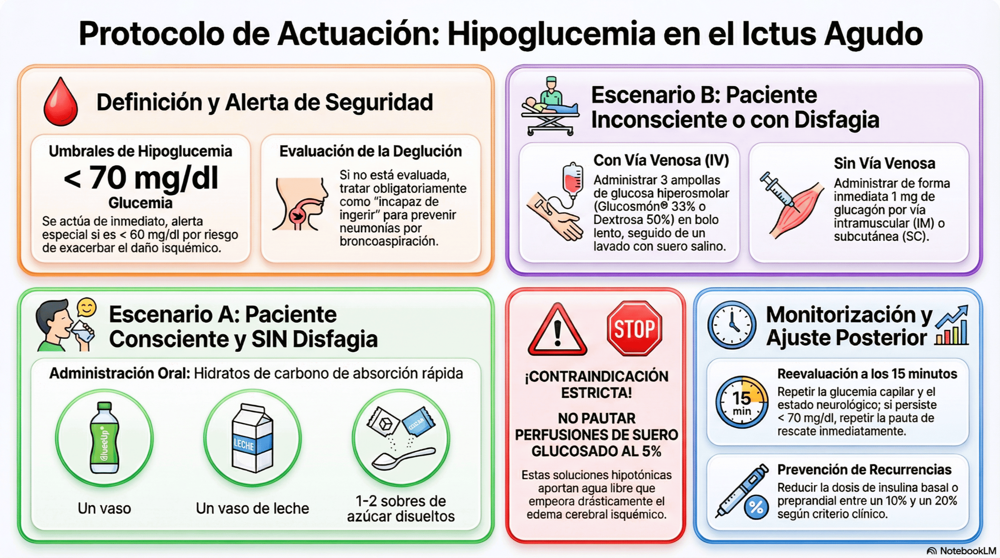

En caso de presentación de hipoglucemia (glucemia < 70 mg/dl, prestando especial alerta si es < 60 mg/dl dado que exacerba el daño isquémico y puede simular progresión del ictus), se actuará de inmediato según el nivel de conciencia del paciente y su evaluación de deglución previa.
-
Paciente consciente y SIN disfagia (Test de deglución):
-
Administrar hidratos de carbono de absorción rápida por vía oral: GlucoUp®, 1 vaso de leche o 1-2 sobres de azúcar disueltos.
- Alerta de seguridad:
Si el paciente no tiene evaluada la deglución, debe
tratarse siguiendo la vía del paciente "incapaz de
ingerir" para evitar neumonías por broncoaspiración.
-
-
Paciente inconsciente, con disfagia o incapaz de ingerir:
-
Con vía venosa: Administrar de inmediato 3 ampollas de glucosa hiperosmolar IV (ej. Glucosmón® al 33% o Dextrosa al 50%) en bolo lento. Lavar la vía posteriormente con suero salino fisiológico.
- ¡Contraindicación
estricta!: NO
pautar perfusiones de mantenimiento con suero
glucosado al 5%. Estas soluciones
hipotónicas aportan agua libre que empeora
drásticamente el edema cerebral isquémico
-
Sin vía venosa: administrar 1 mg de glucagón (IM o SC).
-
- Monitorización y ajuste posterior:
-
Reevaluar el estado neurológico y la glucemia capilar en 15 minutos. Si la glucemia persiste menor a 70 mg/dl, repetir la pauta de rescate de inmediato.
-
Reducir la dosis de insulina preprandial o basal en un 10–20 % según proceda para evitar recurrencias.
Ante hipoglucemias recurrentes o graves debe
revisarse la pauta completa de insulinización y notificar al
equipo médico responsable.
Volver al índice